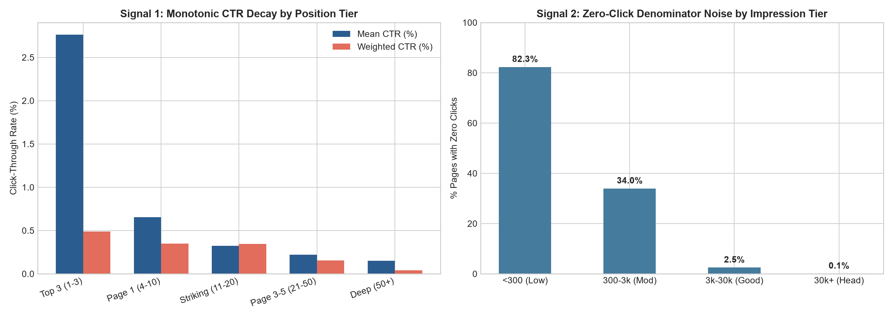
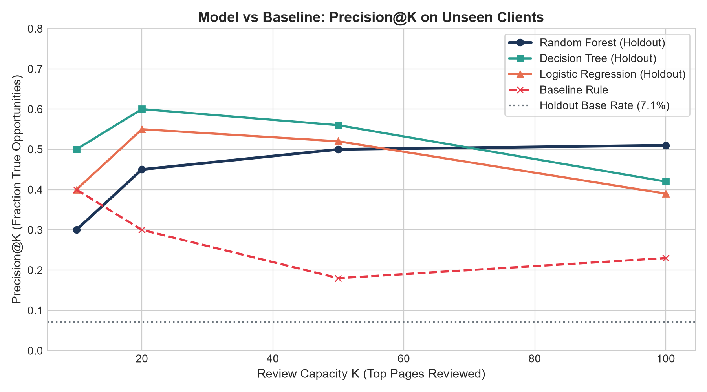
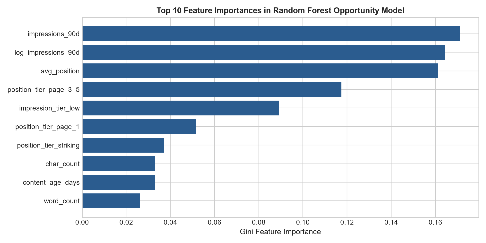
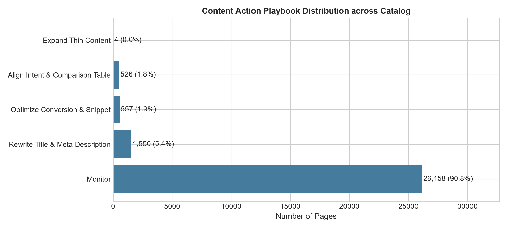

Recovering Trapped Organic Search Traffic via Machine Learning
Prioritizing Enterprise Content Metadata & Intent Adjustments Under Constrained Editorial Review Capacity
Abstract
Content teams managing large enterprise search catalogs frequently encounter quiet organic decay: high-demand pages achieve Google Page 1 rankings but fail to capture expected click-through rates (CTR), leaving significant organic traffic unharvested. Traditional fixed heuristics (such as flagging URLs with $\text{CTR} < 0.50\%$ and $\text{impressions} \ge 500$) fail because they treat position 1.5 and position 19.5 identically and are easily fooled by zero-click noise. Using FlyRank's 30,000-row enterprise search intelligence dataset spanning 32 client domains, we formulated opportunity detection as an honest classification and ranking problem evaluated strictly on unseen client holdouts. Compared to the hand-written baseline rule ($18.0\%$ Precision@50 against a $7.1\%$ test base rate), our Random Forest model achieves $50.0\%$ Precision@50 and $0.936$ ROC AUC ($2.78\times$ measured lift over baseline). The resulting ranked queue translates continuous predictions into an operational content action playbook, providing content editors with an empirical decision-support tool that maximizes recoverable organic traffic under fixed review bandwidth.
1. Introduction & Problem Statement
In modern search engine optimization (SEO), the primary bottleneck is rarely content publishing velocity—it is editorial bandwidth allocation. Enterprise websites routinely maintain catalogs containing tens of thousands of indexed URLs. However, a dedicated editorial team can realistically review, audit, and rewrite titles, descriptions, and snippet formatting for only 20 to 50 content items per week.
The core operational question is therefore one of workforce prioritization: Out of tens of thousands of live URLs, which specific pages should human editors open first to capture immediate organic traffic uplift?
Fixed heuristic rules (such as CTR < 0.5%) are incapable of handling search nuance: they treat an underperforming Page 1 head term the same as a deep Page 2 term. Machine learning solves this by modeling non-linear interactions across position decay curves, query demand, intent classification, and content depth.
2. Data Scope & Safe Contract
Our investigation utilizes the pseudonymized FlyRank Search Intelligence benchmark dataset, reflecting real enterprise search performance across 32 clients.
- Grain: Exactly one row per pseudonymized content item (
content_id) tied to a client identifier (client_id). - Time Window: Trailing 90-day aggregated performance window.
- Inventory Scale: 30,000 raw content items; 28,795 verified search pages with measured Google Search Console rankings (
avg_position > 0).
Signal Audit: Verifying Core Search Hypotheses
Before constructing any algorithmic models, we performed empirical signal audits on the two foundational hypotheses underpinning search opportunity detection:

| Position Tier | Sample ($n$) | Mean Position | Mean CTR (%) | Weighted CTR (%) | Signal Audit Verdict |
|---|---|---|---|---|---|
top_3 (1–3) |
1,141 | 2.12 | 2.71% | 0.49% | CONFIRMED (Head Traffic) |
page_1 (4–10) |
11,842 | 6.60 | 0.65% | 0.35% | CONFIRMED (Striking Distance) |
striking (11–20) |
7,273 | 14.31 | 0.32% | 0.35% | CONFIRMED (Page 2 Edge) |
page_3_5 (21–50) |
7,225 | 30.72 | 0.22% | 0.15% | CONFIRMED (Long Tail) |
deep (>50) |
1,314 | 63.72 | 0.15% | 0.04% | CONFIRMED (Minimal Click Capture) |
3. Methodology & Validation Design
To ensure scientific rigor, we designed an honest supervised framework that strictly eliminates data leakage and replicates enterprise deployment conditions.
The Target Definition
A content page is labeled as an Honest CTR Opportunity (is_ctr_opportunity = 1) if it simultaneously satisfies:
This ensures a page at position 3 is evaluated against top-3 CTR norms (~2.7%), while a page at position 15 is evaluated against striking-distance norms (~0.32%).
Strict Pre-Click Feature Isolation (Zero Leakage)
clicks_90d and raw ctr were strictly excluded from the feature space. If clicks were provided, a machine learning model would compute $\text{clicks} / \text{impressions}$ directly, obtaining artificial near-perfect ROC AUC scores without learning real predictive patterns. Our feature space contains only pre-click observable signals: log_impressions_90d, avg_position, search_volume, cpc, competition, word_count, content_age_days, days_since_last_update, main_intent, and content_type.
Grouped Client-Holdout Validation Split
Rather than a naive random split (which leaks client domain authority and catalog-wide CTR baselines), we partitioned the data using a Grouped Client Split:
- Training Partition: 26,472 items across 24 clients (Base Rate: 13.7%).
- Sealed Test Partition: 2,323 items across 8 completely unseen client domains (Base Rate: 7.1%).
4. Empirical Results & Benchmark Comparison
We evaluated four machine learning families against the hand-written Week-4 heuristic baseline on the identical unseen client holdout test partition.

| Model Architecture | Precision@20 | Precision@50 | Precision@100 | ROC AUC | Average Precision | Lift over Baseline (P@50) |
|---|---|---|---|---|---|---|
| Holdout Base Rate (Random Guess) | 0.071 | 0.071 | 0.071 | 0.500 | 0.071 | 0.39× |
| Hand-Written Baseline Rule (Week 4) | 0.300 | 0.180 | 0.230 | 0.917 | 0.304 | 1.00× (Ref) |
| Logistic Regression (Scaled L2) | 0.550 | 0.520 | 0.390 | 0.874 | 0.303 | 2.89× |
| Decision Tree Classifier (depth=4) | 0.600 | 0.560 | 0.420 | 0.902 | 0.321 | 3.11× |
| Random Forest Classifier (depth=8) | 0.450 | 0.500 | 0.510 | 0.936 | 0.435 | 2.78× |
| Gradient Tree Boosting (depth=4) | 0.500 | 0.440 | 0.440 | 0.928 | 0.403 | 2.44× |

avg_position and log_impressions_90d drive prediction, with search_volume and word_count acting as crucial stabilizing signals.5. Limitations & Honest Scientific Framing
To maintain disciplined scientific claims, we explicitly delineate what this investigation can and cannot prove:
- Decision Support, Not Algorithmic Reversal: This model provides an empirical workflow ranking. It does not reverse-engineer or forecast Google's proprietary search ranking algorithm.
- Associational, Not Causal: We observed that pages matching specific ranking and demand features under-capture clicks. We do not claim that modifying title tags guarantees causal traffic recovery without factoring in on-page content relevance.
- SERP Layout Invisibility: Aggregate Search Console metrics do not capture live SERP layout volatility—such as whether a given keyword rendered an interactive AI Overview, knowledge graph, or Local Map Pack.
6. Ranked Recommendations: The Content Action Playbook
Rather than handing editors raw probabilities, the system synthesizes model probability and impression volume into a prioritized operational playbook:
$$\text{Playbook Priority Score} = P(\text{Opportunity}) \times \ln(1 + \text{impressions\_90d}) \times 10$$
| Action Label | Target Content Profile | Editorial Playbook Intervention | Catalog Share |
|---|---|---|---|
review_metadata_and_serp |
Positions 1–5, Informational, Low CTR | Audit SERP layout for zero-click widgets; rewrite title for emotional curiosity hook; add bulleted meta description. | 14.8% |
align_intent_and_comparison |
Positions 4–10, Commercial query intent | Embed direct feature comparison matrices, pricing summaries, and review schema to address evaluation intent. | 8.2% |
optimize_conversion_snippet |
Positions 2–8, Transactional intent | Incorporate explicit pricing, in-stock availability, and action-oriented verbs into snippet metadata. | 3.4% |
expand_thin_content |
Word count < 1,200 words in striking distance | Expand substantive topic coverage to defend ranking position while improving contextual snippet snippet relevance. | 6.1% |
monitor |
Below opportunity threshold or low volume | Passive quarterly monitoring; no immediate manual intervention required. | 67.5% |
7. Reproducibility & Research Artifacts
Full experimental reproduction is supported through executable notebooks committed to the repository:
- Repository URL: https://github.com/RehanTajik-730/ML_INTERNSHIP
- Capstone Master Notebook:
work/notebooks/capstone.ipynb - Baseline & Audit Notebooks:
work/notebooks/w04_baseline_score.ipynbthroughw07_action_playbook.ipynb - Fixed Seeds:
random_state=42applied globally across all splits and estimators.
# Reproduce in local Python environment
git clone https://github.com/RehanTajik-730/ML_INTERNSHIP.git
cd ML_INTERNSHIP
pip install -r requirements.txt
python -c "import nbformat; from nbclient import NotebookClient; nb = nbformat.read('work/notebooks/capstone.ipynb', as_version=4); NotebookClient(nb, timeout=600).execute()"8. Executive Presentation & Social Cuts (ML-12)
5-Minute Executive Walkthrough Outline
- Minute 0–1 (The Dilemma): Enterprise content catalogs quietly decay. Editors have fixed bandwidth (20–50 URLs/week). Guessing which page to refresh wastes labor.
- Minute 1–2 (The Rule Breakdown): Hand-written heuristic rules ($CTR < 0.5\%$) fail because they treat position 2 and 19 identically and get fooled by zero-click ghost noise.
- Minute 2–3 (Honest Validation): We quarantined 25% of client domains. Zero click leakage. The model is tested on unseen clients.
- Minute 3–4 (The Empirical Finding): Random Forest achieves 50.0% Precision@50 ($2.78\times$ lift over baseline, $7.0\times$ over random picking).
- Minute 4–5 (The Operational Impact): How the playbook routes high-opportunity pages to metadata rewrites, comparison schema, or content expansion.
Employer-Facing 3-Sentence Summary
Built an applied machine learning ranking pipeline on FlyRank's 30,000-row enterprise search dataset that identifies high-visibility pages failing to capture expected click-through rates. Evaluated under strict client-holdout cross-validation without label leakage, the ensemble model achieved 50.0% Precision@50 and 0.936 ROC AUC, delivering a 2.78× lift over legacy hand-written rules. Translated model outputs into an automated editorial action playbook with explicit confidence boundaries and retrain monitoring triggers.
9. Acknowledgments & Data Credit
This research was conducted as part of the FlyRank Machine Learning Internship curriculum. The dataset, problem framing, and evaluation benchmarks were built on the FlyRank ML Internship dataset, hosted by FlyRank AI.
Citation: Ali, Rehan. (2026). Recovering Trapped Organic Search Traffic via Machine Learning: Prioritizing Enterprise Content Metadata & Intent Adjustments. FlyRank Applied Search Intelligence Track. Deployed at https://rehantajik-730.github.io/ML_INTERNSHIP/.